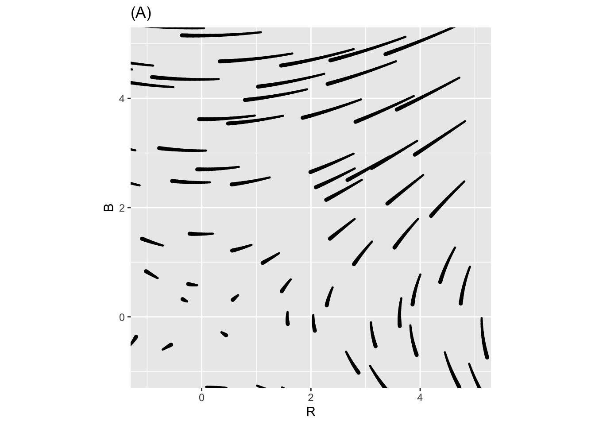
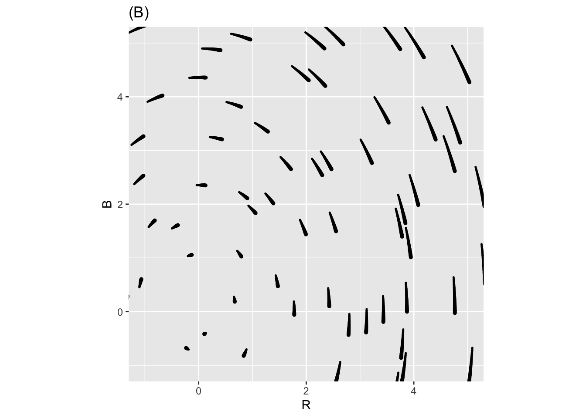
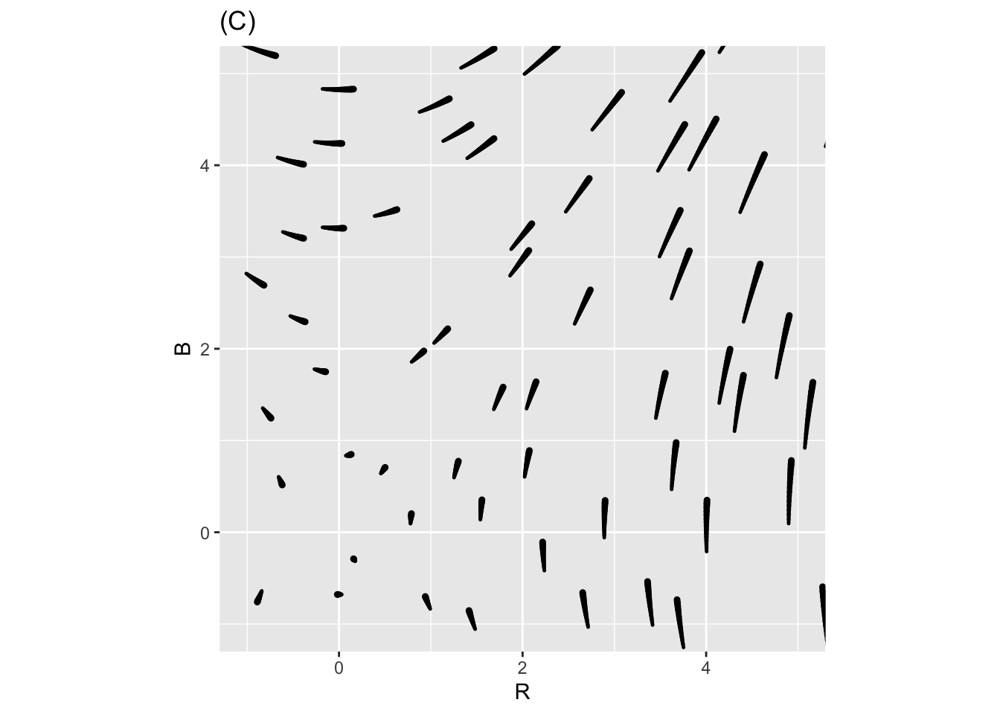
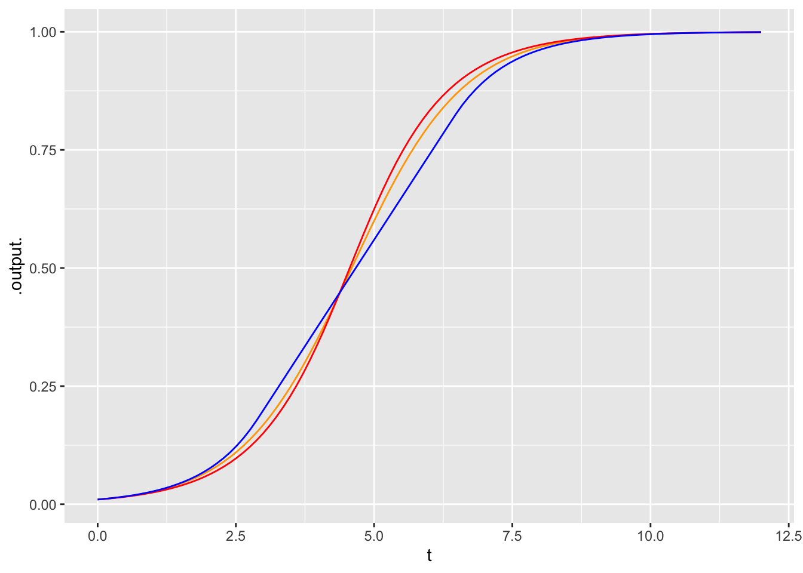

question id: owl-sell-radio-1
Chap 43 Exercises
\[ \newcommand{\dnorm}{\text{dnorm}} \newcommand{\pnorm}{\text{pnorm}} \newcommand{\recip}{\text{recip}} \]
Exercise 1 Lewis Fry Richardson (1881-1953) was an English scientist who worked in many areas, including weather prediction. (See XREF not implemented yet.) This problem concerns a model Richardson built to account for arms races between countries.
In the model, \(x\) and \(y\) respectively refer to the size of the military of the two countries. The equations model how the size of the militaries change in time:
\[\left[\begin{eqnarray*} \dot{x} & = & a y - m x & + r\\ \dot{y} & = & b x - n y & + s\\ \end{eqnarray*}\right]\]
The terms \(r\) and \(s\) represent the basic grievances between the two countries.
The parameters \(a\) and \(b\) represent “fear,” that is, the extent to which one country feels the need to build up arms in response to the other country’s arms.
The parameters \(m\) and \(n\) are about the internal dynamics of the country: its ability/desire to sustain a large military.
- What should the signs of \(r\) and \(s\) be if the countries have substantial grievances against each other?
positive negative zero
- What should be the signs of \(a\) and \(b\), given that they represent “fear?”
positive negative zero
question id: owl-sell-radio-2
- What should be the signs of \(m\) and \(n\), in a country which, on its own, would not like to build a large military? Note the sign preceeding these terms.
positive negative zero
question id: owl-sell-radio-3
Depending on the values of the parameters \(a\), \(b\), \(m\), \(n\), \(r\), and \(s\), the Richardson dynamics can produce different outcomes. Two of the previous three plots show Richardson Arms Race dynamics for two mutually fearful countries with mutual grievances, Freedonia and Jockavia. The third plot does not; the signs of one of the coefficients has been reversed and so the dynamics don’t make sense for modeling an arms race.
- In each of the three plots, start from initial point \(x=2,y=1\), that is, a situation where Freedonia is more armed than Jackavia, and trace out the trajectory over time.
- For each of the three plots, find any equilibrium point and say whether it is stable or unstable. If there is no equilibrium, move on.
- Identify which of the three plots is NOT the Richardson dynamics.
- In the non-Richardson flow, which coefficient has been reversed: it is one of \(a\), \(b\), \(m\), \(n\), \(r\), or \(s\).
- Which of the previous plots are Not the Richardson Dynamics?
Flow Field A Flow Field B Flow Field C
question id: owl-sell-radio-4
- In this plot which if the parameters is reversed?
a b m n r s
question id: owl-sell-radio-5
Exercise 2 Lanchester’s model of combat is \[\partial_t R = - b B\\ \partial_t B = -r R\] with both parameters \(r\) and \(b\) taken to be positive.
Obviously, the state variables \(R\) and \(B\) are to be thought of as functions of time.
Locate the fixed point of the model of combat.
Is it stable? In answering this question, consider two different state spaces and explain why your answer is different in the two spaces:
- All four quadrants of the \((R, B)\) plane.
- Only the first quadrant—that is, \(0 \leq R, 0 \leq B\)—of the \((R, B)\) pane.
At a stable fixed point the state quantities—\(R\) and \(B\) here—do not change. But sometimes there are other functions of the state variables that do not change even when the state is off of any fixed point. These are called conserved quantities. Conserved quantities such as momentum and energy are important in physics.
The text introduced this conserved quantity for Lanchester’s model: \[Q(R, B) \equiv rR^2 - b B^2\ .\] Let’s explore whether the components of the quantity are conserved individually.
- Calculate \(\partial_t r R^2\). Which of these is right? (Hint: Use the chain rule of differentiation and Lanchester’s equations to simplify more.)
\(-2 rb RB\) \(2rR\) \(-2r\dot{R}\) \(2r\dot{R} B\)
question id: ptp47-3
- Perform the similar calculation \(\partial_t b B^2\). Using your result and the result from question (3), is it the case that \(\partial_t r R^2 = \partial_t b B^2\)?
Yes No Depends on \(b\) and \(r\). Depends on \(B\) and \(R\).
question id: ptp47-4
Here are two more candidates for conserved quantities:
- \(rR - bB\)
- \(rB - bR\)
Take the derivative with respect to time of each of them to determine if they are conserved.
- Which of (a) and (b) are conserved?
Just (a).
Just (b).
Both (a) and (b).
Neither (a) nor (b).
question id: ptp47-5
Exercise 3
- Which of the three flows below corresponds to Lanchester’s Law?
A B C
question id: hamster-bend-sofa-1



- Which of these sentences best describes the dynamics of Lanchester’s Law?
Both forces battle to complete annihilation.
The stronger force wipes out the weaker force.
The weaker force holds off the stronger force.
question id: hamster-bend-sofa-2
Exercise 4 Here are three different first-order differential equations with fixed points at \(x^\star = 0\) and \(x^\star=1\).
- \(\partial_t x = g_1(x) \equiv x (1-x)\)
- \(\partial_t x = g_2(x) \equiv 0.25 \sin(2\pi x)\)
- \[\partial_t x = g_3(x) \equiv \left\{\begin{array}{ll} x & x < 0.18\\ 0.18 & 0.18 \leq x \leq 0.82\\ 1 -x & 0.82 < x \end{array}\right.\] The \(g_i()\) functions are graphed below.
A. For each of the equations, match the number (i, ii, iii) to the color (magenta, blue, black). Comment on the differences in shape among them.

B. By eye, integrate each of the differential equations from initial condition \(x_0 = 0.01\). Compare the time series plots. Do the dynamics of \(g_3()\) product a similar or radically different time series than \(g_1()\) and \(g_2()\)?

Comment: Usually, many different mathematical functions can be used to model a given phenomenon. The different functions will have similar shapes, but do not need to be identical.
Exercise 5 In the rabbit/fox system, the quantity \[Q(R, F) = \delta R - \gamma \ln(R) + \beta F - \alpha \ln(F)\] is conserved.
This means that each of the level curves (contours) in the contour plot of \(Q(R, F)\) is follows the path of a trajectory.
Make a contour plot of \(Q(R, F)\) over the domain \(0.1 \leq R \leq 3\), \(0 \leq F \leq 2\) for \(\alpha=.66, \beta = 1.33, \gamma=1, \delta = 1\).
From the graph you made in (1), choose an appropriate initial condition that falls on one of the contours.
Using
integrateODE(), find the trajectory from from the initial condition in (1) for \(0 \leq t \leq 10\). Add a layer to the graphic in (1) showing the trajectory to confirm that the conserved quantities are indeed conserved.Symbolically, calculate \(\partial_t Q(R, V)\). You will need to use the chain rule, which will leave you with terms \(\partial_t R\) and \(\partial_t F\). Plug in the values for these from the differential equations and show that \(\partial_t Q(R, V) = 0\).
Exercise 6 Newton’s Law of Cooling is about how a hot (or cold) object comes into equilibrium with the ambient temperature. For instance, you might have a cup of coffee at \(200^\circ\)F in a room at \(70^\circ\)F. Unless you drink it, the coffee will cool with time until it reaches the room’s temperature. In this setting, \(x_\text{fixed} = 70^\circ\)F. The value of \(a\) depends on how insulated the cup is (and details of evaporation, etc.). But if the coffee reaches very near to room temperature in 60 minutes, \(a \approx 0.5\) with units 1/minute.
- What are the units of the output of \(x(t)\)?
degrees F per minute degrees F 1/minute 1/degrees F
question id: birch-bring-bed-1
- What are the units of \(\dot{x}\)?
degrees F per minute degrees F 1/minute 1/degrees F
question id: birch-bring-bed-2
- What is \(x\)?
the room temperature
the initial temperature of the coffee
the instantaneous coffee temperature as a function of time
the fixed rate at which the coffee cools
the instantaneous rate at which the coffee cools as a function of time
question id: birch-bring-bed-3
- What is \(\dot{x}\)?
the room temperature
the initial temperature of the coffee
the instantaneous coffee temperature as a function of time
the instantaneous rate at which the coffee cools as a function of time
question id: birch-bring-bed-4
Exercise 7 Our generic model for limited growth is
\[\partial_t x = r x (1-x/k)\ ,\] which you can see as a modification of the proportional-growth model \[\partial_t x = r x\ .\]
The proportional-growth model will lead to \(x(t)\) increasing without limit. Sometimes that is a good model over short times, before \(x(t)\) has a chance to get unrealistically big. But over long periods of time, something’s gotta give.
The limited growth model involves a carrying capacity \(k\). For \(t\) when \(x(t)\) is very small, the population growth is well approximated by the usual proportion-growth model. For intermediate \(t\), the population has grown to a large enough size that it is consuming a substantial fraction of the available resources and population growth slows. When the population reaches the carrying capacity the growth stops (e.g. birth rate = death rate).
- If the units of \(x(t)\) is, say, rabbits, what is the units of \(k\)?
rabbits
rabbits per day
rabbits per week
rabbits per year
question id: rhinosaurus-sharpen-knob-1
- Suppose the units of \(\dot{x}\) is, rabbits per month, what is the units of \(r\)?
1/month
rabbits per month
months per rabbit
rabbits per month-squared
question id: rhinosaurus-sharpen-knob-2
- Even without finding the full solution \(x(t)\) to the differential equation, you can figure out how big the population will be when growth falls to zero. How big?
\(k\) \(k/r\) \(r/k\) \(1/r\)
question id: rhinosaurus-sharpen-knob-3
Activities
Exercise 8 In the description of the SIR model, we pointed out how a model of recovery \(\partial_t I = -\alpha I\) differs from the usual “recover after 7 days” style of description. (See MC_xref("fig-recovery-pattern").)
Find a value of \(\alpha\) such that the expectation value of the time to recovery is 7 days. To do this:
- Find a formula for the function \(I(t)\) from the differential equation.
- Guess an appropriate value for \(\alpha\).
- Construct the appropriate integral using \(I(t)\) to find the expectation value of \(t\). (See Chapter XREF not implemented yet.)
- Modify your guess for \(\alpha\) until the expectation value comes out to 7.
Loading required namespace: cubatureExercise 9 The Susceptible-Infective-Recovered (SIR) model has only two parameters, \(\alpha\) and \(\beta\).
\[\partial_t S = -\beta S I\\ \partial_t I = \beta S I - \alpha I\]
The \(\alpha\) parameter controls how long it takes for an infective to recover. If we are considering only recovery, and not the introduction of new infectives from the susceptible population, the relevant differential equation is simply \[\partial_t I = \alpha I\ .\] 1. Set \(\alpha\) so that the half-life for infectiveness is 5 days.
Using \(\beta = 0.5\) and \(\alpha\) as in (1), set up a numerical integration of the SIR model. Integrate out to \(t=100\) from an initial condition of \(S=0.999\) and \(I=0.001\), corresponding to 0.1% of the population being infected. Plot out the time series \(S(t)\). From the time series, what fraction of the population eventually get the disease?
One sort of government tactic to keep small the spread of disease is to close borders, with the idea that there will be fewer infectives at the start of the epidemic which will keep the epidemic smaller. Public health professionals are skeptical of this common-sense tactic. Follow the same procedure in (2), but set the initial condition to \(S=0.99999\) and \(I=0.00001\). Does common sense hold?
Another strategy is “social distancing” and isolating infectives. To model this, reduce \(\beta\), the rate at which susceptibles interact with infectives. Keeping \(\alpha\) at the value you determined in (1), set \(\beta\) that only about half the susceptibles are ever infected.
No answers yet collected